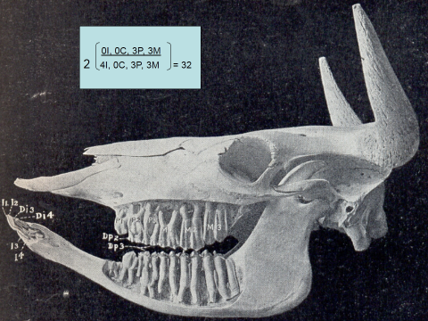
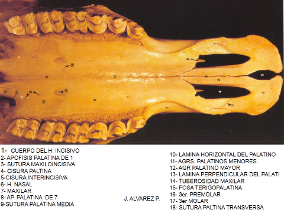

La función de los dientes es el primer proceso de digestión mecánica, la molienda de partículas grandes de los alimentos en partículas más pequeñas (vanLoon, 1976 in ). Los herbívoro tienen dientes compuestos llamados dientes Hypsodontes y otros animales tienen dientes simples o Brachydont. La dentición de herbívoro debe permitir el continuo y considerable desgaste de las superficies masticatorias. Las cabras, como en otros rumiantes, carecen de los incisivo superiores . En cambio, poseen una almohadilla dental endurecida, contra la que muerden.
 